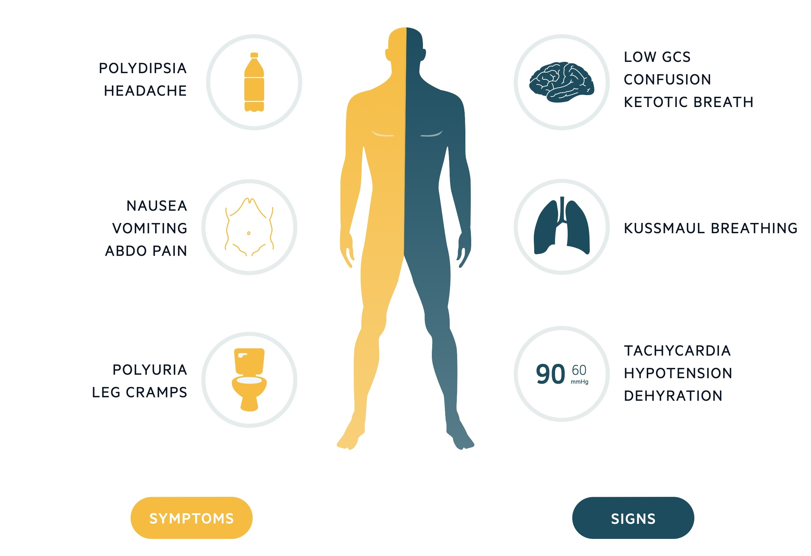
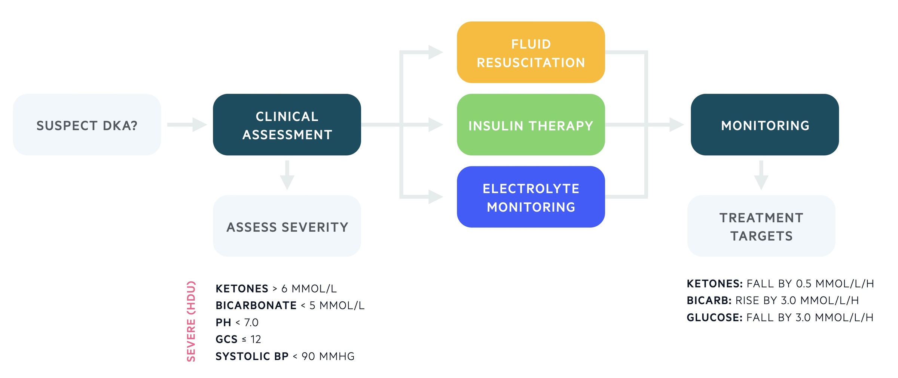

| Component | Threshold (US with UK in brackets) |
|---|---|
| Hyperglycemia | > 200 mg/dL (> 11.0 mmol/L) or known diabetes |
| Ketonaemia / ketonuria | β‑hydroxybutyrate ≥ 3 mmol/L or significant ketonuria (> 2+) |
| Acidosis | HCO₃⁻ < 15 mEq/L (mmol/L) and/or venous pH < 7.30 |
Introduction
Diabetic ketoacidosis (DKA) is a life‑threatening diabetic emergency. It is a severe metabolic complication of diabetes, typically seen in type 1 diabetes (new presentation, missed insulin, or intercurrent illness), but it can also occur in type 2 diabetes in specific settings.
Hyperglycemia causes osmotic diuresis leading to volume depletion and electrolyte abnormalities, requiring prompt recognition and management.
Biochemical triad (diagnostic concept) ⌄
Epidemiology
- DKA is a common acute hyperglycemic complication among type 1 diabetes patients.
- Increasingly recognized in type 2 diabetes (see “Unusual presentations”).
- Estimated ~4% of patients with T1DM develop DKA annually; up to ~14% of diabetes-related hospital admissions may be due to DKA.
Pathophysiology
Mechanism (stepwise) ⌄
- Insulin deficiency → inability to utilize glucose → rising serum glucose (hyperglycemia).
- Glucose cannot be used → ↑ hepatic glucose production via glycogenolysis and gluconeogenesis.
- Counter‑regulatory hormones (e.g., cortisol, glucagon, growth hormone) rise → worsens hyperglycemia and drives alternative fuel use.
- ↑ Lipolysis → ↑ free fatty acids → hepatic ketogenesis.
- Ketone bodies (acetone, acetoacetate, and predominantly β‑hydroxybutyrate) rise → ketonemia.
- Ketones are weak acids → metabolic acidosis; progressive illness with increasing ketone burden.
- Hyperglycemia → osmotic diuresis + vomiting → profound hypovolemia → electrolyte derangements, reduced consciousness, death if untreated.
Precipitants
In patients with established diabetes, there is usually an underlying trigger. Treat DKA and treat the precipitant.
| Common precipitants | Approx frequency |
|---|---|
| Infection | 30–40% |
| Insulin non‑adherence | ~25% |
| Inappropriate dose alteration | ~13% |
| New diagnosis of diabetes | 10–20% |
| Myocardial infarction | ~1% |
Clinical features
Symptoms and signs ⌄
DKA often starts with insidious polyuria and polydipsia. As it progresses: malaise, nausea/vomiting, abdominal pain, dehydration, confusion, reduced GCS.
Symptoms
- Nausea
- Vomiting
- Polyuria
- Polydipsia
- Abdominal pain
- Leg cramps
- Headache
Signs
- Abdominal tenderness
- Dehydration
- Hypotension
- Kussmaul breathing (deep “sighing” respirations)
- Ketotic/fruity breath
- Reduced consciousness → coma
Symptoms/signs infographic

Diagnosis
Immediate diagnostic investigations ⌄
- Serum glucose: > 200 mg/dL (11.0 mmol/L)
- VBG/ABG: pH < 7.30 or bicarbonate < 15 mEq/L (15 mmol/L)
- Ketones: capillary blood ketone ≥ 3 mmol/L or urinary ketones +++ or above
Unusual presentations
Ketosis‑prone T2DM and euglycemic DKA ⌄
- Ketosis‑prone T2DM: some T2DM patients can present in DKA. (Higher reported risk in some groups; clinically: assess any acutely ill diabetic for DKA.)
- Euglycemic DKA: DKA with normal/near‑normal glucose. Recognize early; may have higher mortality.
Common euglycemic DKA contexts:
- Depleted hepatic glycogen: prolonged vomiting, alcohol use, malnutrition/starvation.
- SGLT‑2 inhibitors (increasingly recognized in practice).
Investigations
Bedside, blood tests, and imaging ⌄
Bedside tests
- ECG
- Urinalysis ± urine culture
- Pregnancy test (when applicable)
Blood tests
- CBC
- BMP/CMP (electrolytes + renal function)
- CRP (if used locally)
- LFTs
- Blood cultures (if infection suspected)
- Troponin (if ischemia suspected)
Imaging
- Chest X‑ray when clinically indicated
Tailor additional testing to the suspected precipitant and complications (e.g., AKI, electrolyte derangements).
Management
Goals of therapy ⌄
- Restore circulating volume and tissue perfusion
- Clear ketones and halt ketogenesis
- Decrease glucose toward normal
- Correct electrolyte derangements (especially potassium)
- Identify and treat the precipitant
DKA pathway / flowchart

Initial assessment (ED/ICU style) ⌄
- ABCDE with formal GCS and full vitals (HR, T, RR, BP, SpO₂)
- IV access: x2 large‑bore
- Check blood/urine ketones
- Check capillary + serum glucose
- Send labs: CBC, BMP/CMP, VBG; consider cultures, troponin; obtain ECG; start monitoring
- Establish usual diabetes regimen (basal insulin history matters)
Severity assessment and level of care ⌄
Any one of the following suggests severe DKA and higher level monitoring (e.g., ICU/stepdown depending on institution):
- Blood ketones > 6 mmol/L
- Bicarbonate < 5 mEq/L
- pH < 7.0
- GCS ≤ 12
- Systolic BP < 90 mmHg
- Potassium < 3.5 mEq/L on admission
Fluid resuscitation ⌄
Patients are intravascularly depleted and require IV fluids. Assess volume clinically + with labs; consider Foley for accurate I/O when needed.
- Initial fluid: 0.9% normal saline (especially if SBP < 90 mmHg).
- If SBP does not improve after fluids, escalate—consider other causes of shock.
Example fluid regimen from the provided protocol ⌄
- 1 L NS over 1 hour
- Then 1 L over 2 hours (repeat x2 = 2 L over 4 hours)
- Then 1 L over 4 hours (repeat x2 = 2 L over 8 hours)
Typical water deficit cited: ~100 mL/kg (e.g., up to ~7 L in a 70‑kg person). Adjust to patient (HF/CKD/elderly require caution).
Potassium replacement ⌄
Insulin therapy drives potassium into cells → can cause dangerous hypokalemia. Monitor and replace early.
Maintain serum K⁺ between 4.0–5.5 mEq/L (mmol/L).
| K⁺ level | Action (US practice framing) |
|---|---|
| < 3.3 | Hold insulin; replete K⁺ aggressively; recheck frequently. |
| 3.3–5.2 | Add KCl to IV fluids (dose per institution) and monitor. |
| > 5.2 | No replacement initially; monitor closely (levels often fall once insulin starts). |
Dosing specifics vary by hospital protocol (central vs peripheral line, renal function, ECG changes).
Intravenous insulin therapy ⌄
Start a fixed‑rate IV insulin infusion (FRIII concept) based on patient weight.
- Insulin rate: 0.1 units/kg/hr (e.g., 60 kg → 6 units/hr)
- If patient uses long‑acting basal insulin, continue basal during IV insulin; hold prandial/short‑acting insulin.
- Newly diagnosed: a basal insulin may be started at 0.25 units/kg SQ per protocol.
Dextrose “crossover” and insulin reduction ⌄
When glucose falls below 250 mg/dL (14 mmol/L):
- Start IV dextrose (e.g., D10 at ~125 mL/hr per referenced protocol) in addition to NS + insulin (does not replace NS).
- Consider reducing insulin infusion to 0.05 units/kg/hr to prevent hypoglycemia and hypokalemia while continuing to clear ketones.
Key idea: you keep insulin running to stop ketogenesis; dextrose prevents hypoglycemia while ketones clear.
Monitoring & metabolic targets
Monitoring schedule ⌄
- Hourly: blood ketones and blood glucose
- If capillary glucose > 360 mg/dL (20 mmol/L) or “HI”, send formal lab glucose
- VBG: at 1 hr and 2 hr, then every 2 hrs thereafter (for pH and bicarbonate)
- Potassium: at least every 4 hrs in first 24 hrs (sooner if abnormal)
- Severe DKA: continuous cardiac and SpO₂ monitoring
- Strict fluid balance; consider urinary catheter if anuria/incontinence prevents accurate monitoring
Treatment targets (what “good progress” looks like) ⌄
| Marker | Target trend |
|---|---|
| Blood ketones | Fall by ≥ 0.5 mmol/L/hr |
| Bicarbonate | Rise by ≥ 3.0 mEq/L/hr |
| Blood glucose | Fall by ≥ 54 mg/dL/hr (3.0 mmol/L/hr) |
| Serum potassium | Maintain 4.0–5.5 mEq/L |
Blood ketones are the most useful marker; if unavailable, use bicarbonate and glucose trends.
Resolution & transition
When to stop IV insulin ⌄
Continue IV insulin until ketoacidosis has resolved:
- Ketones < 0.6 mmol/L
- Venous pH > 7.30 and/or bicarbonate > 18 mEq/L
If glucose < 250 mg/dL (14.0 mmol/L), continue D10 (or institutional equivalent) alongside IV insulin + NS ± KCl.
Transition to subcutaneous insulin ⌄
- Inform diabetes/endocrine team early; aim review within ~24 hours where available.
- When resolved and patient is eating/drinking: transition to SQ insulin.
- Overlap is mandatory: give SQ insulin with a meal, then stop IV insulin ~1 hour later.
- If not eating/drinking: consider transition to a variable‑rate insulin infusion per institutional protocol.
Complications
Major complications and why they happen ⌄
- Hypokalemia (major cause of mortality): total body K depletion + insulin shift → rapid drop.
- ARDS and other critical illness complications.
- Co‑morbid precipitants: sepsis or MI drive mortality risk.
- Cerebral edema: more common in pediatrics; rare but catastrophic.
- Hypoglycemia: from insulin without adequate dextrose crossover.
- AKI: from severe dehydration (pre‑renal injury); worsened by ongoing osmotic diuresis.
Potassium disturbances are central: dehydration → AKI; acidosis → transmembrane K shifts (often elevated at presentation); insulin therapy → intracellular shift → dangerous hypokalemia unless replaced.
DKA vs HHS, at a glance
| Feature | DKA | HHS |
|---|---|---|
| Typical diabetes | Type 1 (also T2DM) | Type 2 |
| Onset | Hours–1–2 days | Days–weeks |
| Glucose | > 200 mg/dL (> 11 mmol/L) | > 540 mg/dL (> 30 mmol/L) |
| Ketones | ≥ 3 mmol/L | < 3 mmol/L (often absent) |
| Acidosis | Present | Minimal/absent |
| Effective osmolality | Variable | > 320 mOsm/kg |
| Primary threat | Ketoacidosis | Hyperosmolality & dehydration |
| Mortality | < 1% | 15–20% |
Management priorities (don’t mix these up)
Fluids
- DKA: Aggressive early fluids + insulin to stop ketogenesis.
- HHS: Fluids first, slow correction; massive deficits (often 6–9 L).
Insulin
- DKA: Start early – 0.1 units/kg/hr.
- HHS: Do NOT start early unless ketones present or glucose not falling with fluids. If needed: 0.05 units/kg/hr.
Potassium
- Both: Total body K⁺ depleted.
- Insulin → intracellular shift → dangerous hypokalemia.
- Target 4.0–5.5 mEq/L in both conditions.
Osmolality
- DKA: Not the main treatment target.
- HHS: Primary target; fall by 3–8 mOsm/kg/hr.
- Rapid correction → cerebral edema.
Common pitfalls
- Starting insulin too early in HHS → rapid osmolar shift.
- Stopping IV insulin before SQ overlap in DKA.
- Under‑replacing potassium once insulin starts.
- Ignoring thrombotic risk in HHS (LMWH is essential).
Quick formulas
- Effective osmolality: 2 × Na + Glucose (mmol/L)
- Glucose conversion: mmol/L × 18 ≈ mg/dL